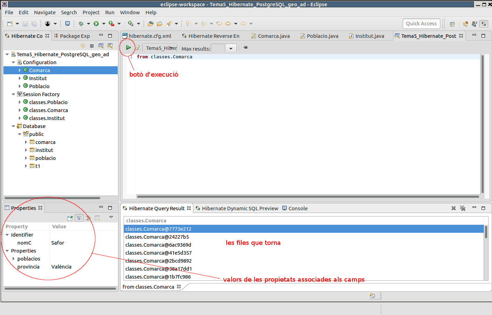
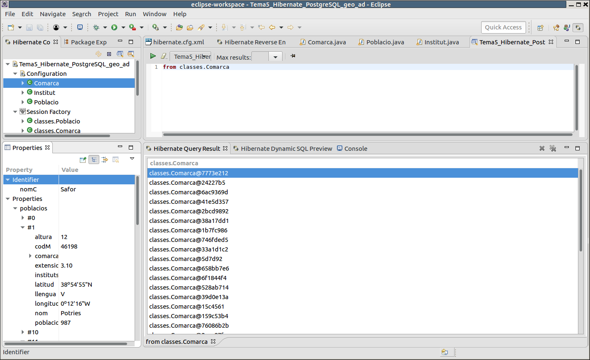
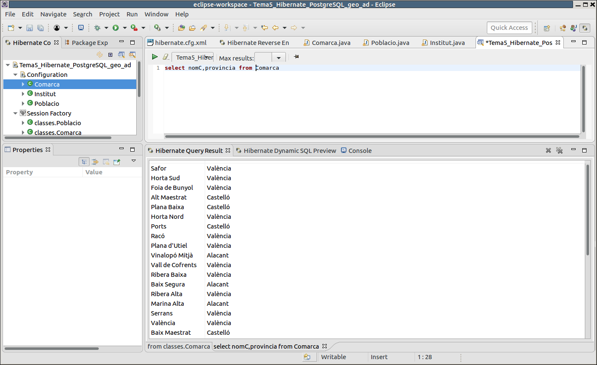

5.3 - HQL: consultes senzilles
Com havíem comentat, des de la perspectiva Hibernate podrem veure les dades. No podrem veure directament el contingut de les taules, però sí que podrem fer sentències HQL per veure el contingut. Apretem amb el botó de la dreta sobre la configuració de la consola i triem HQL Editor.
Sobre la finestra podrem escriure les sentències (si apretem al botó de la dreta sobre una classe ens suggerirà la sentència HQL per a consultar-la). La primera podria ser aquesta from Comarques. Hem de respectar escrupulosament majúscules i minúscules, ja que en definitiva estem accedint a les classes Java.

Com podem comprovar torna les files d'una forma un poc críptica, ja que en l'apartat de resultats només ens mostra els objectes (les referències als objectes). Però si seleccionem una determinada fila podrem veure a l'esquerra, en l'apartat de Propietats, el valor de cada camp, millor dit, de cada propietat (associada a un camp).
I comencem a veure el potencial de les propietats. Què fa quan troba una clau externa? A les classes generades havia posat un Set (conjunt) amb tots els objectes relacionats, que en aquest cas són totes les poblacions de la comarca. Si despleguem la propietat poblacionses podrem veure totes les poblacions de la comarca seleccionada. Com veieu, molt útil, ja que a banda de que a partir de la població podem veure la seua comarca, també a partir de la comarca podem veure totes les seues poblacions.

Si la consulta fóra més completa, especificant els camps, ens eixiran directament en l'apartat de resultats. Observeu com se sembla a SQL : select nomC,provincia from Comarques

Llicenciat sota la Llicència Creative Commons Reconeixement NoComercial CompartirIgual 2.5